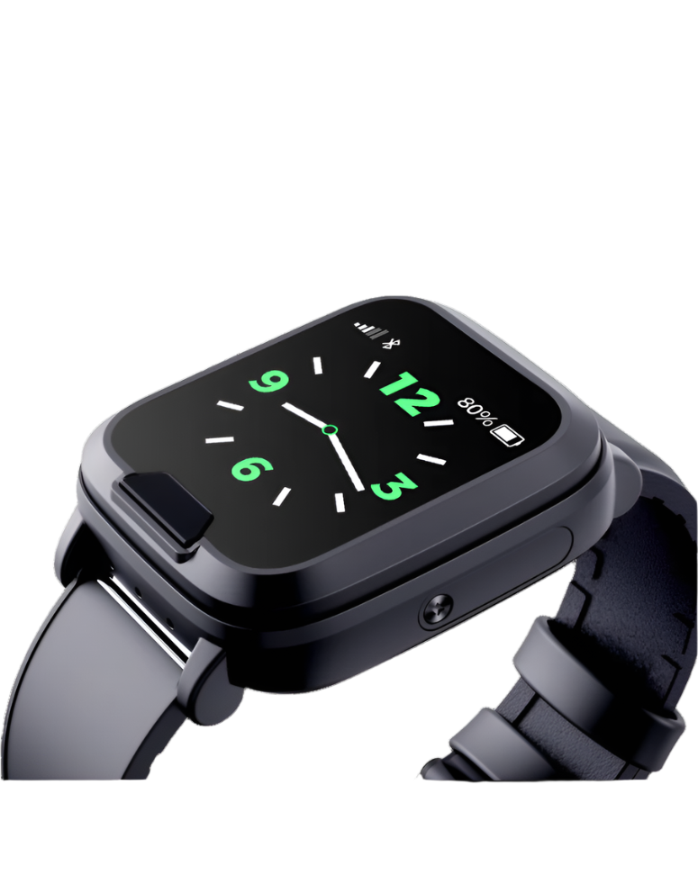
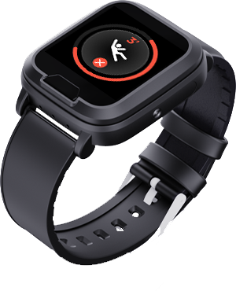
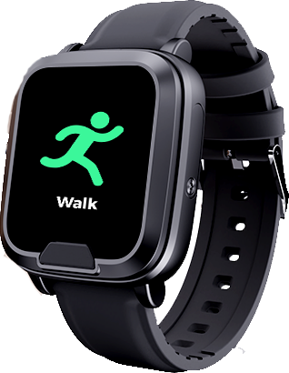

SOS panic activation
One-touch emergency escalation for moments where speed matters more than complexity.
A sleek 4G emergency wearable designed for seniors, lone workers, families, estates, and monitored environments — with SOS response, calling, location intelligence, and health-aware telemetry in one everyday device.

The EV06 deserves better positioning than generic panic-button copy. This concept upgrades the messaging, visual system, and conversion flow so the device feels trusted, modern, and deployable.
Built from the source material and reframed into clearer value, not raw spec dumping.
One-touch emergency escalation for moments where speed matters more than complexity.
Direct voice communication helps verify the situation and coordinate assistance faster.
Supports location-driven safety workflows using GPS and connected network/location signals.
Useful for health-aware oversight in senior care, welfare checks, and monitored safety programs.
Supports a broader care and safety story beyond panic-only hardware.
Date, time, battery, and everyday utility make the device easier to keep on consistently.
A useful engagement layer for active seniors, monitored mobility, and daily wellness routines.
Flexible connectivity options where available, helping deployments fit varied environments.
Fits well into professional response, telecare, public safety, and lone-worker ecosystems.
For seniors who need an easier way to call for help, stay reachable, and support more independent living.
Useful for engineers, field teams, guards, and staff working alone or in higher-risk environments.
Gives families greater confidence that loved ones can reach help quickly if something goes wrong.
Better suited to structured response models, monitoring desks, and managed emergency workflows.

The EV06 story gets stronger when it is framed around outcomes: a fall, a panic event, a health concern, a missed welfare signal, or a lone worker needing immediate escalation.
The emergency flow begins with a manual trigger or relevant device event.
Responders get more useful context than a blind panic alone.
Two-way calling and monitoring workflows improve the odds of a fast, informed response.
That’s why the EV06 should be sold as an everyday wearable, not just an emergency object. The watch format, screen, battery visibility, and activity signals all help drive habitual use.

It is a strong fit for elderly users, lone workers, family protection use cases, estates, care environments, and monitored response workflows.
No — the stronger story is that it combines emergency activation, calling, wearable convenience, live visibility, and wellness-aware telemetry.
That is one of the clearest opportunities. The EV06 fits far better when positioned as part of a broader monitoring and response ecosystem.
Final contact details, production copy approvals, testimonials, domain, and any official logos or deployment photography you want on the live version.
I’ve built this version to be operational as a polished static landing page concept. Once you send final branding, contact details, and any extra media, I can wire it up as the full live sales site.